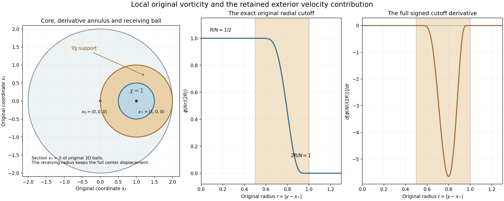
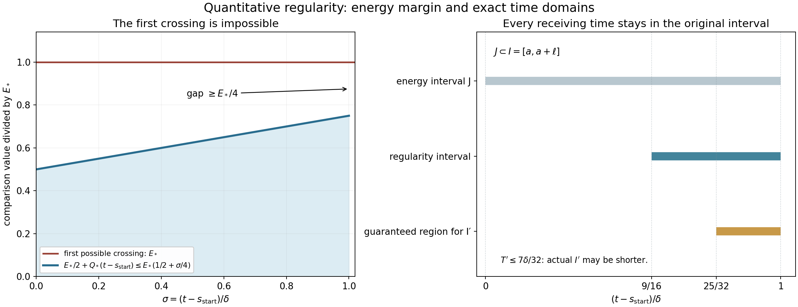

Original vorticity mass and a regularity interval
The preceding lesson found an earlier frequency component whose velocity amplitude is large. We now recover an integral of the original vorticity on a physical ball and preserve it through a definite interval on which the velocity and its derivatives have quantitative bounds.
First, the complete inverse-curl kernel controls the exterior contribution using the original velocity norm. Then a time selected from the nonlinear gradient energy starts an explicit regularity interval. Every heat cutoff term, Newton boundary field and point mass remains in the proof. A smaller actual interval supplies the coefficients needed by the finite Gaussian estimate, while keeping the same original mass.
Read Iterated backpropagation and total speed for the earlier frequency operation, Global nonlinear energy and total speed for the energy inputs, and Interior vorticity bounds on an actual annulus for the complete local heat and Newton maps. The precise Gaussian receiving hypothesis is in Critical velocity tails and weighted heat estimates, equation (4.7) and Section 6.
The human comparison is Terence Tao, Quantitative bounds for critically bounded solutions to the Navier–Stokes equations, version 2, original author article.tex 423–512 and 1254–1290. The argument below retains the original viscosity and coordinates. It proves the mass and regularity inputs; the full weighted error absorption and general large critical-velocity endpoint remain further arguments.
1. The original curl-to-frequency kernel
Use the original smooth source-class, unforced solution on \([t_0-T,t_0]\times\mathbb R^3\), with original viscosity \(\nu>0\), pressure \(p(t,x)\), and bound \(\sup_t\|u(t)\|_3\leq U\), with the full equation
\[ \partial_tu+(u\cdot\nabla)u+\nabla p=\nu\Delta u,\qquad \operatorname{div}u=0 \]throughout the calculation. Keep the exact cutoff \(\phi\) and symbol \(p(\xi)=\phi(\xi)-\phi(2\xi)\) of NS-FLUID-12. The Fourier convention remains \(\widehat f(\xi)=\int f(x)e^{-2\pi i\xi\cdot x}\,dx\). The symbol is supported in \(1/4\leq|\xi|\leq1\); \(\phi=1\) on the ball of radius \(1/2\) and vanishes outside the ball of radius one. Define the original \(\omega=\nabla\times u\).
For \(1\leq i,\ell\leq3\), define the complete multiplier and its inverse transform
\[ k_{i\ell}(\xi)= \frac{p(\xi)}{4\pi^2|\xi|^2} \sum_{j=1}^3 2\pi i\,\varepsilon_{ij\ell}\xi_j, \qquad K_{i\ell}=\mathcal F^{-1}k_{i\ell}. \tag{1.1} \]The value at zero is defined to be zero. This is a smooth compactly supported multiplier, since it vanishes throughout a neighborhood of zero. Every \(K_{i\ell}\) is Schwartz, by repeated integration by parts in its actual compact Fourier support. All nine entries, including zero diagonal entries, are retained.
The exact identity \(\nabla\times\omega =\nabla\operatorname{div}u-\Delta u=-\Delta u\) gives
\[ P_Nu_i(x)=\sum_{\ell=1}^3 \int_{\mathbb R^3}K_{i\ell,N}(x-y)\omega_\ell(y)\,dy, \qquad K_{i\ell,N}(z)=N^2K_{i\ell}(Nz). \tag{1.2} \]Indeed on nonzero frequencies the two curls contribute \(-(2\pi)^2\xi\times(\xi\times\widehat u) =4\pi^2|\xi|^2\widehat u\), because \(\xi\cdot\widehat u=0\). Multiplication by the complete symbol in (1.1) therefore gives exactly \(p(\xi/N)\widehat u\). At zero both sides are zero after that symbol. The source-class \(L^2\) hypotheses justify the identity by Parseval and convolution; no harmonic field is lost.
Write \(w(z)=(1+|z|)^{20}\), and define finite constants
\[ \begin{gathered} C_K=\left(\sum_{i,\ell}\|K_{i\ell}\|_2^2\right)^{1/2}, \qquad C_\nabla=\|\nabla\phi\|_\infty,\\ T_K=\sum_{i,\ell,j}\|w\,\partial_jK_{i\ell}\|_{3/2} +\frac32C_\nabla\sum_{i,\ell}\|wK_{i\ell}\|_{3/2}. \end{gathered} \tag{1.3} \]The sums and integrals are part of the definitions; their values are not absorbed into an unspecified factor. Finiteness follows from the proved Schwartz decay. The original Fourier matrix has squared Frobenius norm \(|p(\xi)|^2/(2\pi^2|\xi|^2)\), because the full cross-product matrix has squared norm \(2|\xi|^2\). Thus Parseval proves the exact positive identity
\[ C_K^2=\frac1{2\pi^2} \int_{\mathbb R^3}\frac{|p(\xi)|^2}{|\xi|^2}\,d\xi>0. \tag{1.4} \]The multiplier is nonzero, so at least one derivative kernel also is nonzero and \(T_K>0\).
2. Local vorticity and the full exterior term
Fix an actual center \(x_*\), a physical frequency \(N>0\), and a dimensionless radius \(R\geq1\). Use exactly
\[ \chi(y)=\phi\!\left(\frac{N(y-x_*)}{2R}\right). \tag{2.1} \]It equals one on \(B(x_*,R/N)\), is supported in \(\overline B(x_*,2R/N)\), and \(|\nabla\chi|\leq NC_\nabla/(2R)\). Its derivative support lies in the actual intervening annulus. No domain is recentered in the working formula.
Split (1.2) into its \(\chi\omega\) and \((1-\chi)\omega\) contributions. For the first part, the vector Cauchy–Schwarz inequality and the full Jacobian give
\[ \left|\int K_N(x_*-y)\chi(y)\omega(y)\,dy\right| \leq C_K N^{1/2} \|\omega\|_{L^2(B(x_*,2R/N))}. \tag{2.2} \]Here the Frobenius \(L^2\) norm of the original matrix kernel is exactly \(N^{1/2}C_K\). The cutoff obeys \(0\leq\chi\leq1\), as does the original \(\phi\).
For each row let \(A_i(y)=(1-\chi(y))K_{i\cdot,N}(x_*-y)\). The complete integration by parts is
\[ \begin{split} \sum_\ell\int (1-\chi)K_{i\ell,N}(x_*-y)\omega_\ell(y)\,dy &=\int(\nabla_y\times A_i)(y)\cdot u(y)\,dy,\\ \nabla_y\times A_i &=(1-\chi)\nabla_y\times [K_{i\cdot,N}(x_*-y)] -\nabla\chi\times K_{i\cdot,N}(x_*-y). \end{split} \tag{2.3} \]The sign from differentiation of \(x_*-y\) remains inside \(\nabla_y\); the second displayed term has its negative sign. Both terms are present. To justify the identity with its noncompact row, multiply it first by a compact cutoff tending to one. The additional derivative of that cutoff is paired with \(u\in L^3\) and a Schwartz kernel in \(L^{3/2}\); its norm tends to zero on the escaping annulus. The other terms converge by Hölder or the source-class \(L^2\) pairing. This proves (2.3) without a boundary term at infinity.
Every derivative term in the first curl is supported where \(N|x_*-y|\geq R\). Changing only the integration variable in its norm gives
\[ \|{\bf1}_{N|x_*-y|\geq R} \partial_jK_{i\ell,N}(x_*-y)\|_{3/2} \leq N(1+R)^{-20}\|w\,\partial_jK_{i\ell}\|_{3/2}. \]The undifferentiated kernel has \(L^{3/2}\) scale \(N^0\). Its cutoff-gradient term is at most \(N C_\nabla(2R)^{-1}(1+R)^{-20}\|wK_{i\ell}\|_{3/2}\). For each row and entry at most three derivative indices occur in the curl bound. Summing all indices and using \(R^{-1}\leq1\) proves, with precisely (1.3),
\[ |P_Nu(x_*)| \leq C_KN^{1/2}\|\omega\|_{L^2(B(x_*,2R/N))} +T_KUN(1+R)^{-20}. \tag{2.4} \]This is the exact needed comparison with the original local vorticity. Its exterior estimate uses the original velocity bound after a complete integration by parts; it assumes no unproved global vorticity maximum.

Figure 1. Left: the exact section \(x_3=0\) of three-dimensional balls for \(x_0=(0,0,0)\), \(x_*=(1,0,0)\), \(R=2,N=4\). The cutoff equals one through radius \(R/N=1/2\) and vanishes at and beyond radius \(2R/N=1\). Its derivative is supported in the intervening annulus. The outer ball about \(x_0\) has radius \(2=|x_*-x_0|+2R/N\), showing the full triangle inclusion. Right panels: the original radial cutoff \(\phi(Nr/(2R))\) and its signed radial derivative, evaluated from the exact smooth bump formula in NS-FLUID-12 (3.1). The numbers illustrate the exact cutoff and support geometry; they are not evaluations of the analytic radius selected in (3.1), and no fluid solution is sampled. Complete proof: (2.1)–(2.4), (3.3). Human comparison: Tao, article.tex 1254–1290. Reproducible figure source.
3. Vorticity mass on an actual time interval
Retain the original one-step constants \(b,D_u,d,\eta,D,L\) and the quantitative iteration constants \(B,\beta,\gamma,\rho,\Lambda\) from NS-FLUID-16. Suppose its input at \((t_0,x_0,N_0)\) and scale \(S\) is satisfied. Take its actual earlier output \((t_*,x_*,N)\). Set
\[ \begin{gathered} q=\sqrt d\,\eta^3,\qquad R=\max\{1,(4T_KU/b)^{1/20}\},\\ h=\min\{b/(4D_u),\gamma q^2/2\}>0,\qquad I=[t_*,t_*+hN^{-2}]. \end{gathered} \tag{3.1} \]The notation \(q\) records the complete lower frequency coefficient; it does not discard its original factors. All constants are chosen from quantities already proved finite and positive. The original derivative bound \(|\partial_tP_Nu|\leq D_uN^3\) and the unchanged target amplitude at \(t_*\) give
\[ |P_Nu(t,x_*)|\geq bN-D_uhN \geq 3bN/4\qquad(t\in I). \]The interval lies in the original equation domain: \(N\geq qS^{-1/2}\) implies \(hN^{-2}\leq hS/q^2\leq\gamma S/2\), while \(t_*\leq t_0-\gamma S\). Its other endpoint is \(t_*\geq t_0-S\). Also \(N\leq\beta S^{-1/2}\), so its actual length obeys
\[ I\subset[t_0-S,t_0-\gamma S/2],\qquad |I|=hN^{-2}\geq hS/\beta^2 . \tag{3.2} \]By the chosen \(R\), \(T_KU(1+R)^{-20}\leq b/4\). Inserting the persisted amplitude into (2.4) leaves \(C_KN^{1/2}\|\omega(t)\|_{2,B(x_*,2R/N)} \geq bN/2\). Consequently
\[ \begin{gathered} \int_{B(x_*,2R/N)}|\omega(t,y)|^2\,dy \geq\frac{b^2}{4C_K^2}N,\\ \int_{B(x_0,(LB+2R/q)\sqrt S)}|\omega(t,y)|^2\,dy \geq\frac{b^2q}{4C_K^2}S^{-1/2} \qquad(t\in I). \end{gathered} \tag{3.3} \]For the second statement use the original displacement \(|x_*-x_0|\leq LB\sqrt S\), the lower frequency \(N\geq qS^{-1/2}\), and the triangle inequality. These give the complete inclusion of the first physical ball in the second. Every center and radius remains explicit. The lower bound concerns the original vorticity, at every time in the actual positive-length interval \(I\).
4. Integrated mass and physical scales
Integrating the second inequality in (3.3), and retaining the original time-length bound, gives
\[ \int_I\int_{B(x_0,(LB+2R/q)\sqrt S)} |\omega(t,y)|^2\,dy\,dt \geq\frac{b^2qh}{4C_K^2\beta^2}\sqrt S . \tag{4.1} \]Any restriction to a smaller closed subinterval preserves the pointwise-in-time bound (3.3); its integrated version retains that subinterval's actual length. No regularity interval with additional coefficient bounds is assumed.
Under the full original parabolic map \(u^\lambda(t,x)=\lambda u(\lambda^2t,\lambda x)\), \(p^\lambda(t,x)=\lambda^2p(\lambda^2t,\lambda x)\), the viscosity, \(U,b\), and all the constants above remain unchanged. The original curl is \(\omega^\lambda(t,x)=\lambda^2\omega(\lambda^2t,\lambda x)\). Every original center and radius is divided by \(\lambda\), every time by \(\lambda^2\), and \(N\) is multiplied by \(\lambda\). The local original curl integral has factor \(\lambda^4\lambda^{-3}=\lambda\), matching \(N\) and \(S^{-1/2}\). The integrated original space-time mass has factor \(\lambda^4\lambda^{-3}\lambda^{-2}=\lambda^{-1}\), matching \(\sqrt S\). The explicit cutoff (2.1), both terms of (2.3), and the exterior factor \(NR/N=R\) transform with exactly these original factors.
4.1. Stronger persistence constants
NS-FLUID-16 Exercise 1 proves the entire iterated theorem with \(B_{\rm full},\beta_{\rm full},\gamma_{\rm full}, \Lambda_{\rm full}\), and the same \(d,\eta,\rho,b\). The proof above therefore applies by direct insertion of these established constants into (3.1)–(4.1). Keep \(q,R,C_K,T_K\) unchanged and set \(h_{\rm full}=\min\{b/(4D_u),\gamma_{\rm full}q^2/2\}\). It is at least \(h\), since \(\gamma_{\rm full}\geq\gamma\). The uniform receiving radius coefficient is \(LB_{\rm full}+2R/q\leq LB+2R/q\). The actual interval-length lower coefficient is \(h_{\rm full}/\beta_{\rm full}^2\geq h/\beta^2\). The pointwise original-mass coefficient is unchanged, and the integrated lower coefficient in (4.1) can only increase. Each statement follows from the proved formulas, with no assertion that two independently selected earlier points or actual time intervals coincide.
5. The original equation and earlier heat field
Keep the smooth source-class solution
\[ \partial_tu+(u\cdot\nabla)u+\nabla p=\nu\Delta u,\qquad \operatorname{div}u=0,\qquad \nu>0 \tag{5.1} \]on \([t_0-T,t_0]\times\mathbb R^3\), with \(\sup_t\|u(t)\|_3\leq U\). Spatial derivatives of the solution belong to \(L^\infty_tL^2_x\), as in the source class used in the preceding proofs. Their auxiliary norms justify differentiation and integrations; their values do not enter the constants below. This receiving theorem concerns this unforced equation. The original force in a different equation would have to enter its energy and curl identities.
Use the actual interval from 3.1,
\[ I=[a,a+\ell],\qquad a=t_*,\qquad \ell=hN^{-2}>0. \tag{5.2} \]3.2 proves \(a\geq t_0-S\), \(a+\ell\leq t_0-\gamma S/2\), \(\ell\leq\gamma S/2\leq S/4\), and \(S\leq T/32\). Consequently \(t_b=a-\ell\) satisfies
\[ t_b\geq t_0-5S/4\geq t_0-5T/128>t_0-T. \tag{5.3} \]The whole earlier heat interval \([a-\ell,a+\ell]\) lies in the original equation domain. Define the actual fields
\[ \begin{gathered} H_s(x)=(4\pi s)^{-3/2}e^{-|x|^2/(4s)},\qquad v(t)=H_{\nu(t-t_b)}*u(t_b),\\ \qquad w=u-v,\qquad z=\nabla\times w,\quad \omega=\nabla\times u. \end{gathered} \tag{5.4} \]There is no change of viscosity, coordinates, pressure or unknown. If \(U=0\), the original velocity vanishes everywhere by smoothness, so its vorticity is zero. The positive frequency amplitude used in 3.1 therefore ensures \(U>0\) in this application.
6. Energy constants and the selected time
Use full ordered derivative tensors with Euclidean magnitude. For \(p\geq3\), set
\[ \frac1{r_p}=\frac23+\frac1p,\qquad C_{m,p}=\|\nabla^mH_1\|_{r_p},\qquad S_3=4\sqrt3. \tag{6.1} \]The vector and tensor Sobolev bound \(\|g\|_6\leq S_3\|\nabla g\|_2\) is proved in the earlier strong-solution foundation. It applies to full derivative tensors by applying the scalar inequality to their magnitude, using \(|\nabla|g||\leq|\nabla g|\), and approximation at zeros. Young's inequality for convolution gives, throughout \(I\),
\[ \begin{gathered} \|v\|_6\leq V_6:=C_{0,6}U(\nu\ell)^{-1/4},\qquad \|\nabla v\|_3\leq V_{13}:=C_{1,3}U(\nu\ell)^{-1/2},\\ |\nabla^jv|\leq V_j:=C_{j,\infty}U(\nu\ell)^{-(j+1)/2} \quad(j=0,1,2). \end{gathered} \tag{6.2} \]The elapsed heat time is at least \(\ell\); this is the entire reason these bounds are uniform down to the left end of \(I\).
For clarity, the full projected heat-kernel constant in NS-FLUID-12 is
\[ \kappa_0=\sum_{i,j,k=1}^3 \left(\delta_{ij}\|\partial_kH_1\|_{6/5} +\frac43\|\partial_i\partial_j\partial_kH_1\|_{6/5}\right). \tag{6.3} \]It comes from the exact projected divergence kernel \(\delta_{ij}\partial_kH_s+ \int_s^\infty\partial_i\partial_j\partial_kH_\sigma\,d\sigma\); the latter integral contributes \(4s^{-3/4}/3\) after taking its \(L^{6/5}\) norm. No projection or low frequency is omitted. The proved nonlinear energy and gradient bounds give
\[ \begin{gathered} \sup_I\|w(t)\|_2\leq W_0:= 4\kappa_0\nu^{-3/4}U^2(2\ell)^{1/4},\\ M:=C_MU^4\nu^{-5/2}\sqrt\ell,\qquad C_M=16\sqrt2\,\kappa_0^2+ 18C_{0,6}^2(\sqrt2-1),\\ \int_a^{a+\ell}\|\nabla w(t)\|_2^2\,dt\leq M. \end{gathered} \tag{6.4} \]In particular the earlier heat time and its factor \(2\ell\) are retained in the \(W_0\) term. One can also read 6.4 directly from the complete inequality
\[ \int_a^{a+\ell}\|\nabla w\|_2^2 \leq \frac{\|w(a)\|_2^2}{\nu} +18C_{0,6}^2U^4\nu^{-5/2} \big(\sqrt{2\ell}-\sqrt\ell\big). \tag{6.5} \]Put \(E(t)=\|\nabla w(t)\|_2^2/2\), and define
\[ E_*=\frac{4M}{\ell}>0. \tag{6.6} \]Integration over \([a,a+\ell/4]\) gives a time \(s_{\rm start}\in[a,a+\ell/4]\) with
\[ E(s_{\rm start})\leq\frac{2M}{\ell}=\frac{E_*}{2}. \tag{6.7} \]Indeed the average of \(E\) over that interval is at most \(2M/\ell\). Continuity supplies a point at or below the average, including the case of equality. The initial norm of the full velocity has not been bounded in \(H^1\) using only its \(L^3\) norm; it is the actual nonlinear part whose gradient energy has been averaged.
7. The gradient-energy inequality
Write \(D(t)=\|\nabla^2w(t)\|_2\). The complete equation for the actual nonlinear part is
\[ w_t-\nu\Delta w=-\operatorname{div}(u\otimes u)-\nabla p. \tag{7.1} \]Pair it with \(-\Delta w\). Solenoidality makes the pressure pairing zero: \(\langle\nabla p,\Delta w\rangle =-\langle p,\Delta\operatorname{div}w\rangle=0\). This is also the exact orthogonal Leray pairing on the source \(L^2\) class. Integration by parts or its Fourier version gives \(\|\Delta w\|_2=\|\nabla^2w\|_2\). Thus
\[ E'(t)+\nu D(t)^2 =\int_{\mathbb R^3}\Delta w\cdot \operatorname{div}(u\otimes u)\,dx. \tag{7.2} \]All derivatives in the convective term remain: \(\operatorname{div}(u\otimes u)=(u\cdot\nabla)u\), because its additional \(u\,\operatorname{div}u\) is exactly zero. Pointwise tensor Cauchy–Schwarz and Hölder give
\[ \|\operatorname{div}(u\otimes u)\|_2 \leq \|u\|_6\|\nabla u\|_3 \leq A(E)\left(V_{13}+\sqrt{S_3}(2E)^{1/4}D^{1/2}\right), \quad A(E)=V_6+S_3\sqrt{2E}. \tag{7.3} \]Here \(\|\nabla w\|_3^2\leq \|\nabla w\|_2\|\nabla w\|_6 \leq \sqrt{2E}S_3D\); the bound for \(\|w\|_6\) uses the same original Sobolev inequality.
For any nonnegative \(A,E,D\), two separate exact Young bounds are
\[ \begin{aligned} AV_{13}D&\leq\frac{\nu}{4}D^2+\frac{A^2V_{13}^2}{\nu},\\ A\sqrt{S_3}(2E)^{1/4}D^{3/2} &\leq\frac{\nu}{4}D^2+\frac{27S_3^2A^4E}{2\nu^3}. \end{aligned} \tag{7.4} \]For the second, write \(c=A\sqrt{S_3}(2E)^{1/4}\) and maximize \(c y^3-\nu y^4/4\) over \(y=\sqrt D\geq0\). Its positive maximum is at \(y=3c/\nu\) and equals \(27c^4/(4\nu^3)\); substituting \(c^4=2ES_3^2A^4\) proves every coefficient. Therefore
\[ E'+\frac{\nu}{2}D^2\leq Q(E),\qquad Q(E)=\frac{(V_6+S_3\sqrt{2E})^2V_{13}^2}{\nu} +\frac{27S_3^2(V_6+S_3\sqrt{2E})^4E}{2\nu^3}. \tag{7.5} \]This full increasing function retains its linear heat term, all mixed heat/nonlinear contributions, and all powers of the original viscosity. We do not replace it by an unspecified polynomial or discard its mixed summands.
8. A definite interval and its velocity norm
Define, from the established inputs,
\[ Q_*=Q(E_*),\qquad \delta=\min\left\{\frac{\ell}{2},\frac{E_*}{4Q_*}\right\}>0, \qquad J=[s_{\rm start},s_{\rm start}+\delta]. \tag{8.1} \]Since \(s_{\rm start}\leq a+\ell/4\), the right endpoint of \(J\) is at most \(a+3\ell/4\). In particular \(J\subset I\). Suppose there were a first time in \(J\) with \(E=E_*\). Before that time \(Q(E)\leq Q_*\); integration of 7.5 and 6.7 would give
\[ E(t)\leq E_*/2+Q_*(t-s_{\rm start})\leq3E_*/4<E_*, \tag{8.2} \]a contradiction. Continuity proves 8.2 throughout \(J\). Integrating the same inequality with its dissipation retained then gives
\[ \sup_J\|\nabla w\|_2^2\leq P^2:=2E_*, \qquad \int_J\|\nabla^2w\|_2^2\,dt\leq D_2^2:=\frac{3E_*}{2\nu}. \tag{8.3} \]For the second bound, \(E(s_{\rm start})+\delta Q_*\leq3E_*/4\) and the final \(E\) is nonnegative.
The exact Fourier splitting estimate used here is
\[ \|w\|_\infty^4\leq \frac4{\pi^4}\|\nabla w\|_2^2\|\nabla^2w\|_2^2. \tag{8.4} \]To verify the constant, keep the convention \(\widehat w(\xi)=\int w(x)e^{-2\pi i x\cdot\xi}\,dx\). For any frequency radius \(R>0\), Cauchy–Schwarz on the inside and outside gives
\[ \int|\widehat w| \leq\sqrt{\frac R\pi}\|\nabla w\|_2 +\frac1{2\pi^{3/2}\sqrt R}\|\nabla^2w\|_2. \tag{8.5} \]The two squared kernel integrals are respectively \(\int_{|\xi|\leq R}(2\pi|\xi|)^{-2}d\xi=R/\pi\) and \(\int_{|\xi|>R}(2\pi|\xi|)^{-4}d\xi =1/(4\pi^3R)\). Taking \(R=\|\nabla^2w\|_2/(2\pi\|\nabla w\|_2)\) gives 8.4. If either derivative norm is zero, the source \(L^2\) field is zero, which supplies the same bound without division by zero. Fourier inversion follows from the resulting \(L^1\) Fourier norm and approximation. Consequently
\[ \|u\|_{L^4(J;L^\infty(\mathbb R^3))} \leq {\cal V}:= \left(\frac{4P^2D_2^2}{\pi^4}\right)^{1/4} +\delta^{1/4}V_0. \tag{8.6} \]Also \(\|z(t)\|_2\leq P\). To check the exact curl norm, Parseval gives \(\|\nabla w\|_2^2=\|\nabla\times w\|_2^2+ \|\operatorname{div}w\|_2^2\); the last term is zero.
9. The complete local heat iteration
For each actual spatial center \(x\in\mathbb R^3\), independently choose the following physical balls and times:
\[ \begin{gathered} \rho=\sqrt{\nu\delta},\quad \epsilon=\rho/32,\quad \tau=\delta/16,\quad R_k=\rho-2k\epsilon,\quad B_k=B(x,R_k),\\ s_k=s_{\rm start}+k\tau\quad(0\leq k\leq10). \end{gathered} \tag{9.1} \]Keep exactly the transition \(j\) of NS-FLUID-13 (6.2): it is zero on \((-\infty,0]\), one on \([1,\infty)\), and \(1-\theta((r+1)/2)\) for \(0<r<1\), with the original even cutoff \(\theta\) from NS-FLUID-11 (4.7). Write \(b_1=\|j'\|_\infty\), \(b_2=\|j''\|_\infty\). No new cutoff is substituted for these source-defined functions. For \(1\leq k\leq9\), put
\[ \begin{gathered} \psi_k(y)=j((R_{k-1}-|y-x|)/\epsilon),\quad \chi_k(t)=j((t-s_{k-1})/\tau),\quad \Psi_k=\chi_k\psi_k,\\ L_1=b_1/\epsilon,\quad L_2=b_2/\epsilon^2+2b_1/(\epsilon R_{10}),\quad L_t=b_1/\tau,\qquad R_{10}=3\rho/8. \end{gathered} \tag{9.2} \]These bounds retain the radial curvature term. The full spatial Hessian norm and Laplacian are at most \(L_2\), and the gradient is at most \(L_1\). The derivative support lies at distance at least \(\epsilon\) from \(B_k\), since the cutoff is already one on the larger ball of radius \(R_k+\epsilon\). Time derivatives are at most \(L_t\), and \(\Psi_k=1\) on \([s_k,s_{\rm start}+\delta]\times B_k\).
Every ball is in the original space. 6.2, 8.3 and 8.6 are global, so they supply the following bound with the same constant for every center:
\[ \sup_J\|\omega(t)\|_{L^2(B_0)} \leq X_0:=P+\sqrt{2v_3\rho^3}\,V_1,\qquad v_3=4\pi/3. \tag{9.3} \]Here \(\omega=z+\nabla\times v\) and \(|\nabla\times v|\leq\sqrt2|\nabla v|\). This proves the required input without an annulus, a global \(L^2\) norm for the heat vorticity depending on initial energy, or an assumed maximum of \(\omega\).
For completeness the full localized original equation is
\[ \begin{aligned} (\partial_t-\nu\Delta)(\Psi_k\omega) ={}&\nabla\times(\Psi_k(u\times\omega)) -2\nu\sum_j\partial_j((\partial_j\Psi_k)\omega)\\ &+(\partial_t\Psi_k+\nu\Delta\Psi_k)\omega -\nabla\Psi_k\times(u\times\omega). \end{aligned} \tag{9.4} \]It follows by the curl equation and the full product rule; the negative cutoff-gradient cross term is retained. The initial field at \(s_{k-1}\) is zero. Its heat representation is therefore the integral of all four right-hand terms, with the spatial derivatives acting on the full original Gaussian.
Use exponents
\[ (p_0,p_1,p_2,p_3,p_4,p_5,p_6) =(2,12/5,3,4,6,12,\infty),\quad K_0=\|H_1\|_{12/11},\quad K_1=\sum_j\|\partial_jH_1\|_{12/11}. \tag{9.5} \]Every reciprocal step is \(1/12\). Young's spatial inequality uses \(12/11\), giving time factors \((\nu r)^{-1/8}\) and \((\nu r)^{-5/8}\). Pairing the velocity with Hölder exponent \(4/3\) in time uses exactly
\[ \begin{gathered} \|r^{-5/8}\|_{L^{4/3}(0,\delta)} =6^{3/4}\delta^{1/8},\qquad \|r^{-1/8}\|_{L^{4/3}(0,\delta)} =(6/5)^{3/4}\delta^{5/8},\\ \int_0^\delta r^{-5/8}\,dr=\frac83\delta^{3/8},\qquad \int_0^\delta r^{-1/8}\,dr=\frac87\delta^{7/8}. \end{gathered} \tag{9.6} \]For the full vector curl, \(\nabla\times(H*F)=\sum_je_j\times(\partial_jH*F)\), whose norm is bounded by the defined sum of derivative kernel norms, without dropping any component. Thus each of the four terms of 9.4 is bounded in \(L^\infty_tL^{p_k}_x\) by its respective summand in
\[ \begin{aligned} C={}&6^{3/4}K_1\nu^{-5/8}\delta^{1/8}{\cal V} +\frac{16}3K_1\nu^{3/8}L_1\delta^{3/8}\\ &+\frac87K_0\nu^{-1/8}(L_t+\nu L_2)\delta^{7/8} +(6/5)^{3/4}K_0\nu^{-1/8}L_1\delta^{5/8}{\cal V}. \end{aligned} \tag{9.7} \]The preceding norm of \(\omega\) on \(B_{k-1}\) is the only vorticity input. Induction from 9.3 proves
\[ X_k=C^kX_0,\qquad \sup_{[s_k,s_{\rm start}+\delta]} \|\omega(t)\|_{L^{p_k}(B_k)}\leq X_k \quad(1\leq k\leq6). \tag{9.8} \]All six spatial gains and all time integrals are explicit. In particular \(X_6\) bounds the original vorticity maximum on the sixth ball and time interval.
10. Continuity and the full Newton map
Set \(\alpha=1/4\), and define the Gaussian constants
\[ \begin{gathered} J_0=2^{1-\alpha}\|H_1\|_1^{1-\alpha}\|\nabla H_1\|_1^\alpha,\\ J_1=\sum_j2^{1-\alpha}\|\partial_jH_1\|_1^{1-\alpha} \|\nabla\partial_jH_1\|_1^\alpha. \end{gathered} \tag{10.1} \]For any integrable differentiable kernel \(K\),
\[ \|K(\cdot+y)-K\|_1 \leq \min(2\|K\|_1,|y|\|\nabla K\|_1) \leq(2\|K\|_1)^{1-\alpha}\|\nabla K\|_1^\alpha|y|^\alpha. \tag{10.2} \]The first inequality follows from the triangle inequality and the fundamental theorem along a segment. The second follows by considering the smaller of its two arguments. The powers of original heat time for 10.1 are again \((\nu r)^{-1/8}\) and \((\nu r)^{-5/8}\). Define the full coefficient
\[ \begin{aligned} C_H={}&6^{3/4}J_1\nu^{-5/8}\delta^{1/8}{\cal V} +\frac{16}3J_1\nu^{3/8}L_1\delta^{3/8}\\ &+\frac87J_0\nu^{-1/8}(L_t+\nu L_2)\delta^{7/8} +(6/5)^{3/4}J_0\nu^{-1/8}L_1\delta^{5/8}{\cal V}, \qquad H_7=C_HX_6. \end{aligned} \tag{10.3} \]Apply 9.4 for \(k=7\), now using the proved \(X_6\). 10.2 and the four integrals 9.6 prove
\[ \|\Psi_7\omega(t)\|_\infty\leq X_6,\qquad [\Psi_7\omega(t)]_{C^\alpha(\mathbb R^3)}\leq H_7 \quad(s_6\leq t\leq s_{\rm start}+\delta). \tag{10.4} \]The maximum uses the actual support inside \(B_6\); it is not inferred from a seminorm. For \(t\geq s_7\), this compact field is the original vorticity on \(B_7\).
Let \(N_{\rm Newt}(y)=1/(4\pi|y|)\). The actual compact field \(\psi_8w\) satisfies
\[ \begin{aligned} \psi_8w={}&\nabla\times N_{\rm Newt}*(\psi_8z) +\nabla\times N_{\rm Newt}*(\nabla\psi_8\times w)\\ &-\nabla N_{\rm Newt}*(\nabla\psi_8\cdot w). \end{aligned} \tag{10.5} \]This follows from \(\nabla\times\nabla\times X-\nabla\operatorname{div}X =-\Delta X\) and \(-\Delta N_{\rm Newt}=\delta_0\), with both product derivatives included. Fourier verification away from zero, together with the compact \(L^2\) field, rules out an additional polynomial field. For \(t\geq s_7\), put
\[ Z_\infty=X_6+\sqrt2V_1,\qquad Z_2=P,\qquad Z_\alpha=H_7+\sqrt2V_2\epsilon^{1-\alpha}. \tag{10.6} \]These bound \(z\), \(\psi_8z\) in \(L^2\), and its local increments from points in \(B_8\) by distances less than \(\epsilon\). The entire segment is inside \(B_7\), and \(\psi_8=1\) at both such points, because its plateau extends to radius \(R_8+\epsilon\).
The full kernel magnitude is \(1/(4\pi|y|^2)\). Its integral inside radius \(2\rho\) is \(2\rho\), and its exterior squared integral from radius \(r>0\) is \(1/(4\pi r)\). Hence the first term in 10.5 is bounded both by \(2\rho Z_\infty\) and by
\[ \inf_{r>0}\left(rZ_\infty+ \frac{Z_2}{2\sqrt{\pi r}}\right) =\frac3{(4\sqrt\pi)^{2/3}}Z_\infty^{1/3}Z_2^{2/3}. \tag{10.7} \]The positive minimizer is \((Z_2/(4\sqrt\pi Z_\infty))^{2/3}\); if either norm vanishes the convolution is zero. Each of the two boundary terms is bounded by \(L_1W_0/(2\sqrt{\pi\epsilon})\), since its support is at distance at least \(\epsilon\). Thus on \(B_8\)
\[ W_{\rm loc}= \min\left\{2\rho Z_\infty, \frac3{(4\sqrt\pi)^{2/3}}Z_\infty^{1/3}Z_2^{2/3}\right\} +\frac{L_1W_0}{\sqrt{\pi\epsilon}} \tag{10.8} \]bounds \(|w|\).
For its gradient, keep the entire Newton distribution
\[ \partial_i\partial_jN_{\rm Newt} =\operatorname{pv}\frac{3y_iy_j-\delta_{ij}|y|^2}{4\pi|y|^5} -\frac{\delta_{ij}}3\delta_0. \tag{10.9} \]The point mass follows by integrating outside a small ball; its inner boundary integral is \(-(4\pi)^{-1}\int_{\mathbb S^2}\vartheta_i\vartheta_j\,dS =-\delta_{ij}/3\). The same angular identity gives zero average for the principal-value kernel. Its full Euclidean tensor norm is \(\sqrt6/(4\pi|y|^3)\). Subtract \(z(x)\) in the inner ball of radius \(\epsilon\) and use 10.6; integrate its radial factor to obtain \(\sqrt6 Z_\alpha\epsilon^\alpha/\alpha\). Between radii \(\epsilon\) and \(2\rho\) the contribution is \(\sqrt6Z_\infty\log(2\rho/\epsilon)\). The point mass contributes at most \(\sqrt2Z_\infty/3\) to the full derivative of the curl. Finally the exterior squared Hessian integral equals \(1/(2\pi\epsilon^3)\); the two boundary fields together therefore cost \(\sqrt{2/\pi}L_1W_0\epsilon^{-3/2}\). All terms give
\[ \begin{gathered} G_{\rm loc}= \frac{\sqrt6}{\alpha}\epsilon^\alpha Z_\alpha +\left(\sqrt6\log\frac{2\rho}{\epsilon}+\frac{\sqrt2}3\right)Z_\infty +\sqrt{\frac2\pi}L_1W_0\epsilon^{-3/2},\\ U_\infty=W_{\rm loc}+V_0,\qquad G_u=G_{\rm loc}+V_1. \end{gathered} \tag{10.10} \]They bound \(|u|\) and \(|\nabla u|\) on \([s_7,s_{\rm start}+\delta]\times B_8\). Every actual center has the same constants. Evaluating at its center proves these bounds on all of \(\mathbb R^3\). This establishes the precise whole-space receiving map from the earlier local result, with its boundary fields and point mass retained.
11. The original vorticity gradient
The ninth cutoff has support in \(B_8\), where 10.10 is proved. The full compact velocity \(V=\psi_9u\) has maximum \(U_\infty\) and derivative maximum \(L_1U_\infty+G_u\). The segment and minimum argument of 10.2 proves \([V]_{C^\alpha}\leq (2U_\infty)^{1-\alpha}(L_1U_\infty+G_u)^\alpha\). For \(t\geq s_8\), \(\Psi_7\omega=\omega\) on this support, so the complete product differences give
\[ \begin{gathered} A_{\rm nl}=U_\infty H_7+ (2U_\infty)^{1-\alpha}(L_1U_\infty+G_u)^\alpha X_6,\\ A_{\rm cut}=L_1H_7+(2L_1)^{1-\alpha}L_2^\alpha X_6,\\ J_{2,\alpha}=\sum_j\||x|^\alpha\nabla\partial_jH_1\|_1, \qquad J_\nabla=\|\nabla H_1\|_1. \end{gathered} \tag{11.1} \]The first two quantities bound respectively the global Hölder seminorms of \(\Psi_9(u\times\omega)\) and \((\partial_j\Psi_9)\omega\). Both factors in each product difference have been included.
Differentiate the full 9.4 for \(k=9\). Every second Gaussian derivative integrates to zero; subtracting the evaluation value of its input therefore bounds it by its full \(\alpha\)-moment. Its time factor \((\nu r)^{-1+\alpha/2}\) integrates to \((2/\alpha)\nu^{-1+\alpha/2}\delta^{\alpha/2}\). The two remaining source terms use one Gaussian gradient, whose time integral is \(2J_\nabla\nu^{-1/2}\sqrt\delta\). The resulting bound is
\[ \begin{aligned} G_\omega={}&\frac2\alpha J_{2,\alpha} \nu^{-1+\alpha/2}\delta^{\alpha/2} (A_{\rm nl}+2\nu A_{\rm cut})\\ &+2J_\nabla\nu^{-1/2}\sqrt\delta (L_t+\nu L_2+L_1U_\infty)X_6. \end{aligned} \tag{11.2} \]One can justify differentiation by first cutting off a positive upper time gap and then applying dominated convergence with the displayed integrable powers. The initial cutoff field is zero. On \(B_9\) at times at least \(s_9\), the cutoff is identically one, so the estimated derivative is the original derivative \(\nabla\omega\), not a cutoff replacement. Taking all actual centers proves
\[ \begin{gathered} |u|\leq U_\infty,\quad|\nabla u|\leq G_u,\quad |\omega|\leq X_6,\quad|\nabla\omega|\leq G_\omega\\ \text{on }\ J_{\rm reg}\times\mathbb R^3,\qquad J_{\rm reg}=[s_{\rm start}+9\delta/16,s_{\rm start}+\delta]. \end{gathered} \tag{11.3} \]The length is exactly \(7\delta/16>0\). All displayed constants depend only on \(U,\nu,\ell\), the fixed Gaussian norms and the fixed cutoff, not on auxiliary high derivatives or the selected time and center.
12. A cylinder for the finite Gaussian estimate
Let \(C_0\geq2\) be the desired finite weighted-estimate parameter, and define
\[ T'=\min\left\{\frac{7\delta}{32}, \frac{\nu}{4C_0U_\infty^2}, \frac1{2C_0G_u}\right\}>0,\qquad t'=s_{\rm start}+\delta,\qquad I'=[t'-T',t']. \tag{12.1} \]Here \(U_\infty,G_u>0\), since 6.2 includes positive Gaussian norm bounds and \(U>0\). The left endpoint of \(I'\) is at least \(s_{\rm start}+25\delta/32\), which is later than the start of \(J_{\rm reg}\). Consequently all 11.3 bounds hold throughout \(I'\). The choices retain an explicit margin:
\[ |u|\leq\frac12\sqrt{\frac{\nu}{C_0T'}},\qquad |\nabla u|\leq\frac1{2C_0T'}. \tag{12.2} \]For any actual spatial center \(x_c\), define the time-reversed original vorticity
\[ {\cal U}(s,y)=\omega(t'-s,x_c+y),\qquad 0\leq s\leq T'. \tag{12.3} \]The original vorticity equation gives exactly
\[ (\partial_s+\nu\Delta_y){\cal U} =u(t'-s,x_c+y)\cdot\nabla_y{\cal U} -{\cal U}\cdot\nabla u(t'-s,x_c+y). \tag{12.4} \]Both signs follow by reversing the original time derivative. Hence 12.2 proves
\[ |(\partial_s+\nu\Delta_y){\cal U}| \leq \frac1{2C_0T'}|{\cal U}| +\frac12\sqrt{\frac{\nu}{C_0T'}}|\nabla_y{\cal U}|. \tag{12.5} \]This is stronger than the zero-residual coefficient hypothesis in NS-FLUID-10 (4.7) and Exercise 1, with its original viscosity. It holds on every finite spatial ball. For example the finite Gaussian estimate can take \(r=\sqrt{4000\nu T'}\), or any larger physical radius; its auxiliary parameters may be \(\tau_G=T'/2000\), \(\varepsilon_G=T'/4000\). They obey \(0<\varepsilon_G\leq\tau_G<T'/1000\) and the required radius inequality. This proves admissibility of the original cylinder; a later off-center mass application must still retain the actual Gaussian and all its boundary costs.
13. The same original mass and its time scale
No new frequency point, ball or vorticity has been selected during 5.1–12.5. 3.3 therefore applies at every time of \(I'\):
\[ \begin{gathered} \int_{B(x_*,2R/N)}|\omega(t,x)|^2\,dx \geq\frac{b^2N}{4C_K^2},\\ \int_{B(x_0,(LB+2R/q)\sqrt S)}|\omega(t,x)|^2\,dx \geq\frac{b^2q}{4C_K^2}S^{-1/2},\\ \int_{I'}\int_{B(x_0,(LB+2R/q)\sqrt S)} |\omega|^2\,dx\,dt \geq\frac{b^2qT'}{4C_K^2}S^{-1/2}. \end{gathered} \tag{13.1} \]All letters \(b,C_K,R,q,L,B,S,N,x_*,x_0\) are exactly the constants and points of 3.1–4.1. The pointwise mass survives restriction unchanged; the time integral uses the new actual length \(T'\).
This length is quantitatively proportional to the original \(\ell\), not just positive for an individual solution. To prove that fact without replacing the original fields, set the following scalar coefficients:
\[ \begin{gathered} e=4C_MU^4\nu^{-5/2},\quad a_6=C_{0,6}U\nu^{-1/4}+S_3\sqrt{2e},\quad b_{13}=C_{1,3}U\nu^{-1/2},\\ q_E=a_6^2b_{13}^2/\nu+ 27S_3^2a_6^4e/(2\nu^3),\qquad d_E=\min\{1/2,e/(4q_E)\}. \end{gathered} \tag{13.2} \]Direct substitution in the complete 6.2–8.1 gives
\[ E_*=e\ell^{-1/2},\quad Q_*=q_E\ell^{-3/2}, \quad\delta=d_E\ell. \tag{13.3} \]Every mixed term in \(a_6^2\) and \(a_6^4\) remains in these formulas.
The remaining constants have the following exact powers of the original interval length; the factors left after removing these powers depend only on \(U,\nu\) and the fixed kernels and cutoff:
\[ \begin{array}{c|c} \text{quantity}&\text{power of }\ell\\ \hline W_0&1/4\\ P,\ D_2&-1/4\\ V_j&-(j+1)/2\\ {\cal V}&-1/4\\ \rho,\epsilon&1/2\\ L_1&-1/2\\ L_2,L_t&-1\\ X_0&-1/4\\ C,C_H&-1/8\\ X_6&-1\\ H_7&-9/8\\ Z_\infty,Z_2,Z_\alpha&-1,\ -1/4,\ -9/8\\ U_\infty,G_u,G_\omega&-1/2,\ -1,\ -3/2 . \end{array} \tag{13.4} \]Each sum is homogeneous: for example the four terms of \(C\) have powers \(1/8-1/4=-1/8\), \(-1/2+3/8=-1/8\), \(-1+7/8=-1/8\), and \(-1/2+5/8-1/4=-1/8\). In the Newton minimum, the first term has power \(1/2-1=-1/2\) and the second has \(-1/3-1/6=-1/2\); its boundary term has \(-1/2+1/4-1/4=-1/2\). The logarithm is exactly \(\log64\), independent of \(\ell\). 11.1 gives powers \(-13/8\) for \(A_{\rm nl}\) and \(A_{\rm cut}\); the first term of 11.2 then has \(-13/8+1/8=-3/2\), and the second has \(1/2-1-1=-3/2\). These computations verify all dependent sums and the sole minimum in the table.
In particular \(u_c=\sqrt\ell U_\infty\) and \(g_c=\ell G_u\) are the exact positive coefficients obtained by 9.1–10.10 and are independent of \(\ell\). Define
\[ \vartheta(U,\nu,C_0)= \min\left\{\frac{7d_E}{32},\frac{\nu}{4C_0u_c^2}, \frac1{2C_0g_c}\right\}>0. \tag{13.5} \]Then the exact length and its comparison with the original frequency scale are
\[ T'=\vartheta\ell=\vartheta hN^{-2} \geq\frac{\vartheta h}{\beta^2}S,\qquad \int_{I'}\int_{B(x_0,(LB+2R/q)\sqrt S)}|\omega|^2 \geq\frac{b^2q\vartheta h}{4C_K^2\beta^2}\sqrt S. \tag{13.6} \]Thus the later mass argument has both a genuine regularity cylinder and an explicit surviving mass at the original scale.
The regularity construction has a further scope that does not require the frequency event. For any actual \([a-\ell,a+\ell]\) contained in the original smooth equation domain, with \(\ell>0\) and the same bound \(U>0\), 5.4–12.5 construct
\[ I'\subset[a,a+\ell],\qquad |I'|=\vartheta(U,\nu,C_0)\ell, \tag{13.7} \]with all four regularity bounds and the Gaussian coefficient inequality. The proof is exact: 5.3 was used only to verify the inclusion of that earlier heat interval; once inclusion is given by its actual endpoints, every line 5.4–12.5 applies to the same fields and constants. The frequency hypothesis was used subsequently only for the mass bounds 13.1 and 13.6. Thus 13.7 is a proved general receiving statement for time intervals of the original critically bounded solution. It neither supplies positive vorticity mass without an amplitude input nor extends a solution beyond its given domain.

Figure 2. The left panel shows the proved upper comparison \(E_*(1/2+\sigma/4)\), with \(\sigma=(t-s_{\rm start})/\delta\), and the strict gap to the proposed first crossing at \(E_*\) (8.1–8.2). It is a comparison function, not a sampled solution energy. The right panel shows the exact nested time regions in 11.3–12.1. The orange segment is the largest possible receiving interval permitted by \(7\delta/32\); the actual interval can be shorter because 12.1 retains both coefficient constraints. These plotted ratios describe the original intervals and do not replace the equation or its physical parameters. Reproducible sources: Python figure source and SVG supplied with the course.
14. Five solved exercises
Exercise 1: divide the amplitude budget and choose the duration
Instead of assigning a quarter of the original amplitude to both the exterior term and its time variation, choose \(0<\varepsilon<1\) and \(0<\theta<1-\varepsilon\). Give the exact radius, duration and surviving mass. For fixed \(\varepsilon\), maximize the resulting coefficient in the integrated mass bound.
Solution. Keep every original frequency and physical constant from Sections 1–4, and put
\[ R_\varepsilon=\max\left\{1, \left(\frac{T_KU}{\varepsilon b}\right)^{1/20}\right\}, \qquad h_\theta=\min\left\{\frac{\theta b}{D_u}, \frac{\gamma q^2}{2}\right\}. \tag{14.1} \]The complete exterior term is at most \(\varepsilon bN\), since \((1+R_\varepsilon)^{20}\geq T_KU/(\varepsilon b)\). The actual derivative bound gives
\[ |P_Nu(t,x_*)|\geq(1-\theta)bN \quad(t_*\leq t\leq t_*+h_\theta N^{-2}). \tag{14.2} \]The time interval is inside the same original domain, because \(h_\theta\leq\gamma q^2/2\). Subtracting the entire exterior contribution in (2.4), and squaring the resulting nonnegative inequality, proves
\[ \begin{gathered} \int_{B(x_*,2R_\varepsilon/N)}|\omega(t,x)|^2\,dx \geq \frac{(1-\theta-\varepsilon)^2b^2}{C_K^2}N,\\ \int_{B(x_0,(LB+2R_\varepsilon/q)\sqrt S)}|\omega(t,x)|^2\,dx \geq \frac{(1-\theta-\varepsilon)^2b^2q}{C_K^2}S^{-1/2}. \end{gathered} \tag{14.3} \]Sections 5–13 apply on this actual interval of length \(\ell_\theta=h_\theta N^{-2}\). Their coefficient \(\vartheta(U,\nu,C_0)\) is independent of that length. The integrated mass on its regular receiving interval therefore has the full lower bound
\[ \frac{b^2q\vartheta}{C_K^2\beta^2} h_\theta(1-\theta-\varepsilon)^2\sqrt S. \tag{14.4} \]The receiving spatial radius is independent of \(\theta\). Write \(a_\varepsilon=1-\varepsilon\) and \(\theta_c=D_u\gamma q^2/(2b)>0\). The factor to maximize is
\[ \frac b{D_u}\min(\theta,\theta_c)(a_\varepsilon-\theta)^2, \qquad 0<\theta<a_\varepsilon. \tag{14.5} \]On the uncapped part its derivative, without the positive factor \(b/D_u\), is \((a_\varepsilon-\theta)(a_\varepsilon-3\theta)\). It is positive up to \(a_\varepsilon/3\), and negative after that point. On the capped part the derivative is \(-2\theta_c(a_\varepsilon-\theta)<0\). The two expressions agree at \(\theta_c\), when that point lies in the allowed interval. Thus an actual maximizer in the allowed open interval is
\[ \theta_{\rm opt}=\min\{(1-\varepsilon)/3,\theta_c\}. \tag{14.6} \]This proves optimality within the specified allocation family, with its original time cap retained. It makes no claim about other cutoff functions or receiving arguments. Inserting \(\varepsilon=\theta=1/4\) recovers every original quarter-budget formula.
Exercise 2: vary the energy threshold without assuming regularity
Let \(K=2M/\ell\), the proved upper bound for the selected initial energy, and choose any \(\kappa>1\). Construct a positive interval using the cap \(\kappa K\). Propagate its energy and dissipation bounds through the full regularity argument.
Solution. Use the same increasing function \(Q\) from (7.5), with the same actual earlier heat field. Define
\[ E_\kappa=\kappa K,\qquad \delta_\kappa=\min\left\{\frac\ell2, \frac{(\kappa-1)K}{2Q(E_\kappa)}\right\}>0. \tag{14.7} \]Before a first cap crossing, integration of the complete gradient-energy inequality gives
\[ E(t)\leq K+Q(E_\kappa)(t-s_{\rm start}) \leq\frac{\kappa+1}{2}K<\kappa K. \tag{14.8} \]Continuity excludes that crossing, so the bound holds throughout \([s_{\rm start},s_{\rm start}+\delta_\kappa]\). Keeping dissipation in the same integral gives
\[ \sup\|\nabla w\|_2^2\leq P_\kappa^2:=2\kappa K,\qquad \int\|\nabla^2w\|_2^2\,dt \leq D_{2,\kappa}^2:=\frac{(\kappa+1)K}{\nu}. \tag{14.9} \]The earlier time selection is unchanged, so this interval is still inside \([a,a+\ell]\). Use exactly
\[ {\cal V}_\kappa= \left(\frac{4P_\kappa^2D_{2,\kappa}^2}{\pi^4}\right)^{1/4} +\delta_\kappa^{1/4}V_0,\qquad \rho_\kappa=\sqrt{\nu\delta_\kappa}. \tag{14.10} \]Now substitute \(\delta_\kappa,P_\kappa,D_{2,\kappa}, {\cal V}_\kappa,\rho_\kappa\) into every formula of Sections 9–12, retaining \(W_0,V_j,\nu,b_1,b_2\). This is an exact application of those proved estimates: their inputs are precisely the energy, velocity-time norm, global \(L^2\) nonlinear norm and original heat bounds just established. It supplies all six heat steps, Hölder constants, both Newton boundary terms, the point mass, \(U_{\infty,\kappa},G_{u,\kappa}\) and \(G_{\omega,\kappa}\). The final actual duration is
\[ T'_\kappa=\min\left\{\frac{7\delta_\kappa}{32}, \frac{\nu}{4C_0U_{\infty,\kappa}^2}, \frac1{2C_0G_{u,\kappa}}\right\}>0. \tag{14.11} \]Every original mass bound survives on this subinterval. For \(\kappa=2\), \(E_\kappa=E_*\), \(\delta_\kappa=\delta\), \(P_\kappa=P\) and \(D_{2,\kappa}=D_2\), so this is the complete original construction as one member of a proved family. No particular \(\kappa\) is asserted to maximize the final duration; its complete dependence is retained.
Exercise 3: use a shorter earlier heat interval
Suppose the actual equation domain contains \([a-c\ell,a+\ell]\), where \(c>0\). Redo the heat and energy inputs with \(t_b=a-c\ell\), without replacing the original solution or viscosity.
Solution. The actual heat elapsed time ranges from \(c\ell\) to \((c+1)\ell\). Therefore the full original Gaussian estimates are
\[ \begin{gathered} W_{0,c}=4\kappa_0\nu^{-3/4}U^2((c+1)\ell)^{1/4},\\ V_{6,c}=C_{0,6}U(\nu c\ell)^{-1/4},\quad V_{13,c}=C_{1,3}U(\nu c\ell)^{-1/2},\\ V_{j,c}=C_{j,\infty}U(\nu c\ell)^{-(j+1)/2} \quad(j=0,1,2). \end{gathered} \tag{14.12} \]The complete energy estimate, including both actual time endpoints, is
\[ \begin{aligned} \int_a^{a+\ell}\|\nabla w\|_2^2\,dt &\leq \frac{W_{0,c}^2}{\nu} +18C_{0,6}^2U^4\nu^{-5/2} \big(\sqrt{(c+1)\ell}-\sqrt{c\ell}\big)\\ &=M_c:=\left[ 16\kappa_0^2\sqrt{c+1} +18C_{0,6}^2(\sqrt{c+1}-\sqrt c)\right] U^4\nu^{-5/2}\sqrt\ell. \end{aligned} \tag{14.13} \]The right side is positive and finite for every fixed \(c>0\). Average it over the same first quarter, set \(E_{*,c}=4M_c/\ell\), and use the complete
\[ \begin{gathered} Q_c(E)= \frac{(V_{6,c}+S_3\sqrt{2E})^2V_{13,c}^2}{\nu} +\frac{27S_3^2(V_{6,c}+S_3\sqrt{2E})^4E}{2\nu^3},\\ \quad \delta_c=\min\{\ell/2,E_{*,c}/(4Q_c(E_{*,c}))\}. \end{gathered} \tag{14.14} \]The same strict crossing proof supplies the actual energy and dissipation inputs. Sections 9–12 receive them with \(W_{0,c},V_{j,c}\), including every boundary and heat term. Each length degree in (13.4) is unchanged because \(c\) is fixed and dimensionless; the actual final length is \(\vartheta_c(U,\nu,C_0)\ell>0\). For \(c=1\), (14.12)–(14.14) recover every constant in Section 6. No bound uniform as \(c\) tends to zero is claimed: the displayed original heat factors retain that dependence.
Exercise 4: transport the original frequency grid and all physical bounds
For \(\lambda>0\), give the exact parabolic map for the proof, including its frequency grid, nonlinear energy and final receiving interval.
Solution. Keep
\[ u^\lambda(t,x)=\lambda u(\lambda^2t,\lambda x),\qquad p^\lambda(t,x)=\lambda^2p(\lambda^2t,\lambda x). \tag{14.15} \]Every term in the original momentum equation acquires \(\lambda^3\); divergence acquires \(\lambda^2\), so the viscosity remains exactly \(\nu\). The global \(L^3\) norm remains \(U\), and the original vorticity is \(\omega^\lambda=\lambda^2 \omega(\lambda^2t,\lambda x)\). The heat kernel identity \(H_{\nu t}(x)=\lambda^3H_{\nu\lambda^2t}(\lambda x)\) and a spatial change of variables give
\[ v^\lambda(t,x)=\lambda v(\lambda^2t,\lambda x), \qquad w^\lambda(t,x)=\lambda w(\lambda^2t,\lambda x). \tag{14.16} \]The earlier heat start is divided by \(\lambda^2\). Parseval or a direct spatial substitution then gives
\[ E^\lambda(t)=\lambda E(\lambda^2t),\qquad \|\nabla^2w^\lambda(t)\|_2^2 =\lambda^3\|\nabla^2w(\lambda^2t)\|_2^2. \tag{14.17} \]Every term of the complete gradient-energy inequality has factor \(\lambda^3\). In particular \(E_*^\lambda=\lambda E_*\), \(Q_*^\lambda=\lambda^3Q_*\), \(\delta^\lambda=\lambda^{-2}\delta\), and the selected starting time is divided by \(\lambda^2\). The exact powers in (13.4) give
\[ U_\infty^\lambda=\lambda U_\infty,\quad G_u^\lambda=\lambda^2G_u,\quad X_6^\lambda=\lambda^2X_6,\quad G_\omega^\lambda=\lambda^3G_\omega,\quad (T')^\lambda=\lambda^{-2}T'. \tag{14.18} \]Both coefficient margins in (12.2) transform with their respective original velocity and gradient powers.
The Fourier transform of the scaled velocity is \(\widehat{u^\lambda}(t,\xi)= \lambda^{-2}\widehat u(\lambda^2t,\xi/\lambda)\). Consequently the exact projection identity is
\[ P_{\lambda N}u^\lambda(t,x) =\lambda(P_Nu)(\lambda^2t,\lambda x). \tag{14.19} \]The grid \(2^{\mathbb Z}\) therefore transports to \(\lambda2^{\mathbb Z}\), whose neighboring ratio remains two. It equals the original grid precisely when \(\lambda\in2^{\mathbb Z}\): equality implies \(\lambda\), the image of \(1\), belongs to the original grid, and a dyadic \(\lambda\) shifts its integer index. For arbitrary positive \(\lambda\) one must keep the transported grid in any statement requiring a dyadic frequency. The kernel identities themselves hold at every positive \(N\). Finally the original local vorticity mass scales by \(\lambda\), and its time integral by \(\lambda^{-1}\), which are exactly the factors on both sides of (3.3), (4.1) and (13.6).
Exercise 5: retain the receiving center and the entire Gaussian
On the actual interval \(I'=[t'-T',t']\), suppose the original mass bound is written on its proved ball as
\[ \int_{B(x_0,L_0)}|\omega(t,y)|^2\,dy\geq E_0>0. \tag{14.20} \]Take any receiving center \(x_c\), and set \(D=|x_c-x_0|\). Determine the smallest allowed finite Gaussian radius, and give a lower bound for the weighted mass integral over the later half of the reversed time interval.
Solution. For open Euclidean balls with positive \(L_0\), the exact containment condition is
\[ B(x_0,L_0)\subset B(x_c,r/2) \quad\Longleftrightarrow\quad r/2\geq D+L_0. \tag{14.21} \]Sufficiency follows from the triangle inequality, with strict inequality for points inside the first ball even when its radii meet at equality. For necessity, if \(D>0\) take points approaching the boundary along the ray from \(x_c\) through \(x_0\); their distances from \(x_c\) approach \(D+L_0\). If \(D=0\), any radial ray has that property. If \(r/2<D+L_0\), some interior point is outside the receiving ball. Together with the actual finite Gaussian radius condition this gives
\[ r_{\min}=\max\{\sqrt{4000\nu T'},\,2(D+L_0)\}. \tag{14.22} \]Keep the original reversed field \({\cal U}(s,x)=\omega(t'-s,x_c+x)\) and define
\[ Z=\frac1{T'}\int_{T'/2}^{T'}\int_{|x|<r/2} |{\cal U}(s,x)|^2e^{-|x|^2/(4\nu s)}\,dx\,ds. \tag{14.23} \]For \(y\in B(x_0,L_0)\), the receiving coordinate is \(x=y-x_c\) and has magnitude less than \(D+L_0\). The original mass bound holds at \(t'-s\). Restrict the spatial integral to this actual ball, then integrate its Gaussian lower bound:
\[ \begin{aligned} Z&\geq\frac{E_0}{T'}\int_{T'/2}^{T'} e^{-(D+L_0)^2/(4\nu s)}\,ds\\ &\geq\frac{E_0}{2} e^{-(D^2+2DL_0+L_0^2)/(2\nu T')}. \end{aligned} \tag{14.24} \]The last step uses \(s\geq T'/2\) and keeps the entire square, including the mixed term and core radius. For the proved receiver of Section 13 take exactly \(L_0=(LB+2R/q)\sqrt S\) and \(E_0=b^2qS^{-1/2}/(4C_K^2)\). This positive Gaussian mass and (14.22) meet two actual receiving requirements. Absorption of the finite estimate's full exterior error is a further calculation; no smaller negative exponent is inferred from the mass bound alone.
15. Sources and the next receiving argument
The author-source comparison is Terence Tao, Quantitative bounds for critically bounded solutions to the Navier–Stokes equations, arXiv:1908.04958v2, original article.tex 423–512 and 1254–1290. The first passage selects an epoch of regularity; the second connects an earlier frequency to vorticity mass. Sections 1–13 give full proofs of the original-viscosity receiving maps used here. In the source's two Duhamel norm displays at lines 484 and 488, the velocity inside integration over \(t'\) must be evaluated at \(t'\). The full localized heat equation in Section 9 retains that integration time.
The regularity construction also applies to every actual interval with its preceding equal-length heat interval inside the equation domain. Positive mass retains its separate proved frequency input. Exercise 3 extends the regularity construction to each positive earlier heat-length ratio, with all original constants displayed.
The next argument must insert the actual Gaussian mass, radius and time interval into the complete finite weighted estimate and absorb its full exterior error. The later annular propagation, original vorticity-to-velocity conversion and shell sum must then be proved on their exact domains. These are needed before the general large critical-velocity endpoint can be concluded.